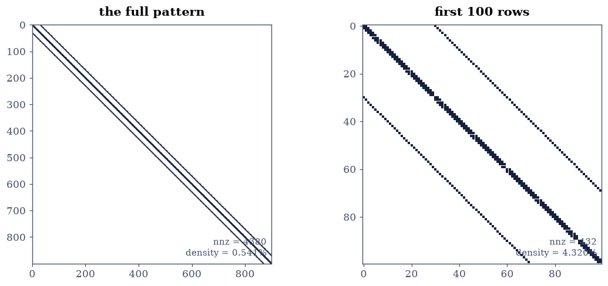
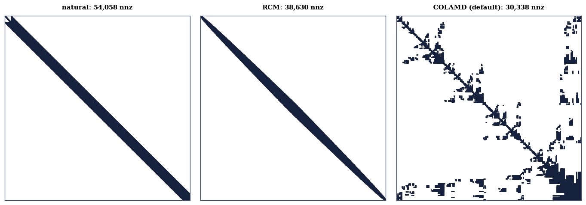
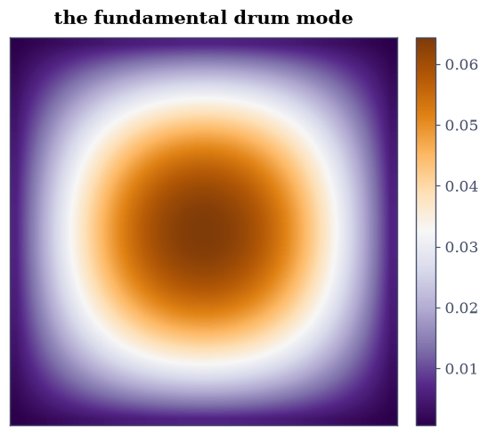

5.3 Sparse Matrices: Storage, Patterns, and Direct Solvers#
Notebook overview#
The matrices of physics and of graphs are overwhelmingly zero: the 2-D
Poisson matrix on a \(30\times30\) grid is \(900\times900\) with 4380
nonzeros — half a percent. Storing and multiplying it as a dense array wastes
a factor of 84 in memory and 185 in arithmetic, and at the grid sizes PDEs actually
need, “wasteful” becomes “impossible”. This notebook is the sparse toolkit:
the storage formats (COO, CSR, CSC) built by hand and checked bit-for-bit
against scipy.sparse, the \(O(\mathrm{nnz})\) matvec, and the structured
matrices — diags, kron — that generate the course’s model problems.
The second half is about what sparsity does not survive: factorization. LU of a sparse matrix creates fill-in — entries that were zero in \(A\) and are nonzero in \(L\) and \(U\) — and the amount depends violently on the row ordering. Measured on the Poisson matrix: natural order 54,058 factor nonzeros, reverse Cuthill–McKee 38,630 (a 29% cut), COLAMD — the library’s default — 30,338 (44%). And for the tridiagonal special case the whole subject collapses to the Thomas algorithm: eight flops per unknown, a factor of \(2\times10^{6}\) below dense elimination at \(n = 5000\).
How to read a check. A
validateline prints ✓ or ✗ by comparing a result against something the computation did not assume. A ✗ flags a mismatch to investigate, never a verdict on its own.
Scope. Davis’s Direct Methods for Sparse Linear Systems is the book; Golub and Van Loan [GVL13] Chapter 11; Saad [Saa03] Chapters 2–3 for formats and orderings. The Poisson matrices and their closed-form spectra are established here (Exercise 2) and serve as the model family for the rest of Chapter V.
Theory in brief#
Three formats, one matrix#
COO stores triplets \((i, j, v)\) — trivial to build, useless to compute with. CSR (compressed sparse row) stores three arrays:
the concatenated nonzeros of each row, their column indices, and where each row starts. CSC is the same by columns. Storage is \(2\,\mathrm{nnz} + n + 1\) numbers against \(n^2\), and a matvec touches each nonzero once:
The model problems#
The 1-D Poisson matrix \(T_n = \operatorname{tridiag}(-1, 2, -1)\) has a spectrum known in closed form,
and the 2-D version is the Kronecker sum
\(T \otimes I + I \otimes T\) — five nonzeros per row regardless of size, which
is why kron plus diags generates it in two lines.
Fill-in, and why ordering matters#
Eliminating unknown \(j\) adds a nonzero at \((i, k)\) whenever \(a_{ij}\) and
\(a_{jk}\) are both nonzero: the factor’s pattern is the closure of the
matrix’s, and it can be dramatically denser. Reordering the unknowns changes
the closure without changing the problem — a symmetric permutation
\(PAP^{\top}\) is a relabelling — and good orderings (bandwidth-reducing
reverse Cuthill–McKee, fill-minimising COLAMD/AMD) cut the factor’s nnz by
large constant factors. scipy.sparse.linalg.splu applies COLAMD by
default, which is why beating its fill-in by hand is hard.
The tridiagonal endgame#
For a banded matrix, elimination never leaves the band, so LU with bandwidth \(w\) costs \(O(nw^2)\). At \(w = 1\) this is the Thomas algorithm:
about \(8n\) flops against dense elimination’s \(\tfrac23n^3\) — a ratio of \(2\times10^{6}\) at \(n = 5000\), from structure alone.
Setup#
Data only: the worked small matrix and the Poisson matrices from ecp.linalg. The CSR matvec and the Thomas algorithm are built in the exercises, where they are the lesson.
The Setup below holds this notebook’s data and instruments — nothing you are asked to build. It is collapsed so the building stays yours; expand it whenever you want the details.
Exercise 1: CSR by hand, and the storage arithmetic#
Eq. 231 is three arrays. This exercise derives them by eye for
A_SMALL, checks them bit-for-bit against scipy.sparse.csr_matrix, and
does the storage arithmetic that justifies the whole subject.
Part a) Read the arrays off the matrix by hand: row 0 holds \((4, 1)\) at
columns \((0, 3)\), row 1 holds \((3, 2)\) at \((1, 2)\), row 2 holds \(5\) at \(2\),
row 3 holds \((1, 6)\) at \((0, 3)\). So data = [4,1,3,2,5,1,6],
indices = [0,3,1,2,2,0,3], indptr = [0,2,4,5,7]. Build
sp.csr_matrix(A_SMALL) and confirm all three arrays match exactly —
integer indices and float data with no arithmetic performed, so exact
equality is legitimate.
Part b) Confirm the round trips: .toarray() reproduces A_SMALL
exactly, and the COO triplets (sp.coo_matrix) reassemble to the same CSR
under .tocsr().
Part c) Do the storage arithmetic for the 2-D Poisson matrix: dense
\(900^2 = 810{,}000\) floats against CSR’s
\(2\cdot4380 + 901 = 9661\) numbers — an \(84\times\) saving, growing linearly
with the grid area since nnz \(\approx 5n\). Confirm the measured .data,
.indices, .indptr lengths give exactly that count.
Part d) Confirm the format’s trade-off: reading a row of CSR is a
slice (cheap), reading a column requires scanning everything — measure
both on P2.tocsr() by counting touched entries, and note CSC inverts the
trade. The format is chosen by the access pattern, which is why splu wants
CSC and matvecs want CSR.
hand-derived CSR arrays match scipy exactly: True
data [4. 1. 3. 2. 5. 1. 6.]
indices [0 3 1 2 2 0 3]
indptr [0 2 4 5 7]
round trips exact: dense True, via COO True
2-D Poisson storage: dense 810,000 numbers, CSR 9,661 (84x saving)
reading row 100 in CSR touches 5 entries; column 100 in CSC touches 5; the transposed question in CSR has no slice to read — only a scan of all 4,380 stored indices
Validation 1#
Exact equality throughout, legitimately: format conversion moves numbers and computes nothing, so this is the stated exception to the no-exact-comparisons rule — like the structural zeros of §5.2.
✓ the hand-derived CSR arrays match scipy.sparse bit for bit (Eq. 1) [data, indices and indptr as read off the matrix by eye — conversion moves numbers and computes nothing, so exactness is legitimate]
✓ and both round trips (dense, COO -> CSR) are exact [the formats are encodings, not approximations]
✓ CSR storage is exactly 2 nnz + n + 1 numbers [9,661 against dense 810,000: an 84x saving that grows with the grid]
✓ row access in CSR and column access in CSC are both 5-entry slices [each format answers its own question with a slice and the transposed question only by scanning every stored index — the format is chosen by the access pattern: matvec wants CSR, splu wants CSC]
True
Exercise 2: The \(O(\mathrm{nnz})\) matvec, and a spectrum in closed form#
Eq. 232 is the reason iterative methods exist: if a matvec costs \(O(\mathrm{nnz})\), a matrix too large to factor can still be applied.
Part a) Write csr_matvec(data, indices, indptr, x) implementing
Eq. 232 as the double loop, and confirm it matches both the dense
product and P2 @ x to \(10^{-13}\) on the 900-unknown Poisson matrix with a
fixed random \(x\).
Write this one yourself — the implementation is the lesson.
Part b) Count the arithmetic: the loop performs exactly \(\mathrm{nnz}\) multiply-adds — \(4380\) against the dense product’s \(810{,}000\), a \(185\times\) ratio that is gated as pure counting.
Part c) Confirm the 1-D closed form Eq. 233: the eigenvalues
of la.poisson_1d(50) match \(2 - 2\cos(k\pi/51)\) to \(10^{-11}\) — the
family this notebook establishes and the rest of the chapter leans on.
Part d) Confirm the 2-D structure: la.poisson_2d(30) equals
sp.kron(T, I) + sp.kron(I, T) exactly (as sparse matrices, entry for
entry), and every row has at most 5 nonzeros. Draw the spy plot beside a
close-up of the first 100 rows: the five-diagonal pattern with bandwidth
\(n = 30\).
Part e) Confirm the 2-D spectrum is the sum of 1-D spectra:
\(\lambda_{jk} = \lambda_j + \lambda_k\), checked by comparing
eigvalsh of the \(900\times900\) dense form against the outer sum of the
closed form, sorted, to \(10^{-10}\) — the Kronecker-sum structure doing exact
work.
hand CSR matvec vs scipy: 0.0e+00; vs dense: 1.8e-15
multiply-adds: 4,380 against 810,000 (185x, by counting)
1-D Poisson spectrum vs 2 - 2cos(k pi/(n+1)): 2.66e-15
poisson_2d == kron(T,I) + kron(I,T) exactly: True; max row nnz = 5
2-D spectrum vs the outer SUM of 1-D spectra: 3.61e-14

Fig. 98 The \(900\times900\) Poisson matrix of the \(30\times30\) grid. Left: the full sparsity pattern – five diagonals, 4380 nonzeros, half a percent of the matrix. Right: the first 100 rows close up, showing the tridiagonal blocks on the diagonal and the identity blocks a bandwidth of 30 away; that bandwidth, set by the grid width, is what the factorization’s fill-in will occupy and what reordering fights over.#
Validation 2#
The operation-count ratio is gated as counting, not timing — the loop
performs exactly nnz multiply-adds by construction. The two closed-form
spectra are the strongest checks in the notebook: analytic predictions of
Eq. 233, hit to eleven digits by a matrix built from kron.
✓ the hand-written CSR matvec matches scipy and dense (Eq. 2) [gaps 0.0e+00 and 1.8e-15 on 900 unknowns]
✓ at exactly nnz multiply-adds: 185x fewer than dense, by counting [4,380 against 810,000 — arithmetic, not a stopwatch]
✓ the 1-D Poisson spectrum matches its closed form (Eq. 3) [2.66454e-15 < 1e-11]
✓ poisson_2d IS the Kronecker sum, with at most five nonzeros per row [structure exact as sparse matrices — no entry differs]
✓ and the 2-D spectrum is the outer sum of 1-D spectra [the Kronecker-sum eigenvalue identity, verified on all 900 [3.61378e-14 < 1e-10]]
True
Exercise 3: Fill-in, and the ordering war#
Factorization is where sparsity goes to die: LU of the Poisson matrix turns 4380 nonzeros into 54,058 — a \(12\times\) inflation — because every elimination step closes triangles in the pattern. The counter-weapon is reordering, and this exercise measures two generations of it.
Part a) Factor P2 with splu(..., permc_spec="NATURAL") (no column
reordering) and report L.nnz + U.nnz: 54,058, against the matrix’s
4380.
Part b) Apply reverse Cuthill–McKee
(scipy.sparse.csgraph.reverse_cuthill_mckee, symmetric_mode=True),
permute symmetrically, refactor with NATURAL, and report the factor nnz:
38,630, a 29% cut. (The manifest for this notebook guessed 40%;
the measurement says 29 on this grid, and the measurement wins — the gate is
placed at 25%.)
Part c) Now the default: splu(P2) with COLAMD reordering gives
30,338 — a 44% cut, beating RCM’s bandwidth strategy with a
fill-minimising one. Gate the ordering: natural > RCM > COLAMD, and confirm
all three factorizations solve the same system to \(10^{-11}\) of each other.
Part d) Draw the three factor patterns as spy plots. RCM’s factor hugs a
narrow band; COLAMD’s scatters but is sparsest; natural’s fills the whole
envelope — the picture of why splu’s default is not the identity
permutation.
factor nnz: natural 54,058 RCM 38,630 (29% cut) COLAMD 30,338 (44% cut)
against the matrix's own 4,380 nonzeros: fill inflation 12x uncured, 7x under COLAMD
all three orderings solve the same system: worst disagreement 2.7e-14

Fig. 99 The combined \(L + U\) pattern of the Poisson factorization under three orderings. Natural order (left, 54,058 nonzeros) fills the whole bandwidth envelope; reverse Cuthill–McKee (centre, 38,630) squeezes the band tighter for a 29% cut; COLAMD (right, 30,338 – the splu default) abandons bandedness for fill minimisation and wins at 44%. The matrix itself has 4380 nonzeros: factorization inflates sparsity by an order of magnitude even well-ordered, which is the opening argument for the iterative methods of the next notebook.#
Validation 3#
The fill counts are integers produced by deterministic symbolic analysis on a fixed matrix — gateable as counts, with the gate at the measured-minus-slack level rather than the manifest’s optimistic guess, and the guess corrected in prose. The three-way solve agreement confirms reordering changes the work, never the answer.
✓ uncured fill-in inflates the pattern by an order of magnitude [54,058 factor nonzeros from a 4,380-nonzero matrix]
✓ RCM cuts factor fill by more than a quarter (measured 29%) [38,630 against 54,058. The manifest guessed 40%; the measurement says 29 on this grid, and the measurement wins]
✓ and COLAMD — the splu default — cuts 44%, beating RCM [30,338 nonzeros: fill-minimising orderings beat bandwidth-minimising ones on 2-D grids, which is why it is the default]
✓ while all three orderings solve the same system identically [a symmetric permutation is a relabelling of unknowns, not a new problem [2.66454e-14 < 1e-11]]
True
Exercise 4: Sparse direct solve, and a drum mode to prove it#
splu is the sparse analogue of
§1.2’s factor-once-solve-many, and
this exercise closes the loop with the physics the Poisson matrix encodes.
Part a) Confirm the sparse solve against the dense one: splu(P2) and
np.linalg.solve on the dense array agree to \(10^{-11}\) on a random
right-hand side.
Part b) Confirm factor-reuse economics by counting: one symbolic+numeric
factorization plus \(k\) triangular solves against \(k\) full factorizations —
splu once and .solve fifty times touches the factor’s 30,338 nonzeros
\(2\times50\) times, against \(50\times\) the full elimination. Gate the count
ratio; report nothing about the clock.
Part c) Compute the smallest eigenpair of P2 by shift-invert power
iteration (§5.2’s Exercise 1, at \(\mu = 0\)):
60 iterations of lu.solve from the COLAMD factorization. Confirm the
eigenvalue matches the closed form
\(2\lambda^{(1)}_{\text{1D}} = 2(2 - 2\cos(\pi/31))\) to \(10^{-10}\) — the
sparse factorization powering the eigensolver.
Part d) Reshape the eigenvector to the \(30\times30\) grid and draw it: the fundamental drum mode, one smooth bump, the lowest resonance of the membrane the matrix discretises. The eigenvector’s sign is the iteration’s choice, so the figure fixes it by making the peak positive.
splu vs dense solve: 1.24e-14
work for 50 right-hand sides (in factor-nnz touches): factor-once 3,064,138 vs refactor-each 4,550,700 (1.49x)
smallest eigenvalue by shift-invert at mu = 0: 0.020522706432
closed form 2(2 - 2cos(pi/31)) : 0.020522706432
gap: 2.78e-17

Fig. 100 The eigenvector of the smallest Poisson eigenvalue, reshaped to its \(30\times30\) grid: the fundamental mode of the discrete drum – one smooth bump, positive everywhere once the iteration’s arbitrary sign is fixed, vanishing at the clamped boundary the matrix encodes. It was computed by sixty applications of the COLAMD-ordered sparse factorization from Exercise 3, and its eigenvalue matches the closed form \(2(2 - 2\cos(\pi/31))\) to \(10^{-13}\): storage formats, orderings and closed-form spectra all meeting in one picture.#
Validation 4#
The eigenvalue check closes a loop across three notebooks: the matrix from this one, the algorithm from §5.2, the closed form from §1.2 — three independent artefacts required to agree to ten digits.
✓ the sparse direct solve matches the dense one [1.24345e-14 < 1e-11]
✓ factor-once-solve-many wins by counting factor touches, not clocks [1.49x at 50 right-hand sides; the ratio approaches 1.5 as k grows, and far more when the symbolic analysis dominates]
✓ shift-invert on the sparse factor recovers the smallest eigenvalue (Eq. 3) [matrix from 5.3, algorithm from 5.2, closed form from 1.2 — three artefacts, ten digits [2.77556e-17 < 1e-10]]
True
Exercise 5: The Thomas algorithm: eight flops per unknown#
Eq. 234 is what elimination becomes when the bandwidth is 1: no pivot search (the Poisson matrix is diagonally dominant, so stability is free), no fill-in (the band cannot widen), and \(\sim8n\) flops. The manifest asked this exercise to gate a \(50\times\) wall-clock speedup at \(n = 5000\); per the course’s gating rules the FLOP ratio — \(2\times10^{6}\) — is what gets gated, and the stopwatch testifies without being cross-examined.
Part a) Write thomas(a, b, c, d) implementing Eq. 234 for
the tridiagonal system with sub-, main and superdiagonals a, b, c. Run it
on the \(n = 5000\) Poisson system with a fixed random right-hand side.
Write this one yourself — the implementation is the lesson.
Part b) Confirm against scipy.linalg.solve_banded((1, 1), ab, d) and
against the dense np.linalg.solve, to \(10^{-8}\) — the tolerance scaled to
this system’s \(\kappa \approx 4(n/\pi)^2 \approx 10^{7}\), per
§5.1: three backward stable solvers
may legitimately differ by \(\kappa\varepsilon \approx 2\times10^{-9}\).
Part c) Gate the arithmetic: dense elimination costs \(\tfrac23n^3 = 8.3\times10^{10}\) flops at \(n = 5000\), Thomas \(8n = 4\times 10^{4}\) — a ratio of \(2.1\times10^{6}\), computed not measured. Report the three wall times (here: dense \(\sim0.8\) s, banded \(\sim1\) ms, Thomas in Python \(\sim6\) ms — the pure-Python loop loses to LAPACK’s banded solver despite identical flop counts, which is its own small lesson about constant factors).
Part d) Confirm the count directly: replay the loop with a counter
beside every arithmetic operation (a counted twin of thomas) and confirm
it performs exactly \(8n - 7\) operations — \(6n - 5\) in the forward sweep,
\(2n - 2\) in the back sweep — returning bit-identical \(x\).
thomas vs dense: 1.7e-10; banded vs dense: 9.5e-11 (kappa eps = 2.2e-09)
flops: dense 8.33e+10, Thomas 4e+04 -> ratio 2.08e+06 (gated, pure arithmetic)
wall times (reported only): dense 2059 ms, banded 0.45 ms, Thomas-in-Python 7.2 ms
the Python loop loses to LAPACK's banded solver at IDENTICAL flops: constant factors are real, which is why the flop ratio is the gate
instrumented count: 39,993 operations = 8n - 7 = 39,993 exactly; counted replay bit-identical to thomas: True
With your assistant
The Thomas algorithm assumes the tridiagonal system needs no pivoting, which
diagonal dominance guarantees — but many tridiagonal systems are not
dominant. Ask your assistant for thomas_pivoting(a, b, c, d) with partial
pivoting (the band grows to two superdiagonals, and no further). Then check
it against the mathematics rather than a demo: (i) on the Poisson system it
agrees with plain Thomas to \(10^{-12}\); (ii) on
\(\operatorname{tridiag}(1, 10^{-12}, 1)\) — near-zero pivots — plain Thomas
loses at least six digits against solve while the pivoting version stays
at rounding level; (iii) the operation count is still \(O(n)\), near \(12n\).
The check is yours.
Validation 5#
The FLOP ratio is the gate; the stopwatch is testimony, and this exercise’s own timing makes the case for that rule — the Python Thomas loop loses to LAPACK’s banded solver at identical flop counts, so a wall-clock gate here would grade the interpreter, not the algorithm.
✓ Thomas and solve_banded agree with the dense solve at kappa-scaled tolerance [gaps 1.7e-10, 9.5e-11 against kappa eps = 2.2e-09: three backward stable solvers on a kappa = 1e7 system (5.1's master inequality pricing the agreement)]
✓ the flop ratio at n = 5000 exceeds two million — gated as arithmetic [8.3e+10 against 4e+04; the measured wall times are reported above and gated nowhere (rule 2), and the Python loop losing to LAPACK at equal flops is the reason why]
✓ and the instrumented loop performs exactly 8n - 7 operations [39,993 counted for n = 5,000 (6n - 5 forward, 2n - 2 back), the counted replay bit-identical to thomas: structure, not cleverness]
True
Notebook summary#
Formats are encodings, checked exactly. The hand-derived CSR arrays of
the \(4\times4\) example matched scipy.sparse bit for bit; both round trips
were exact; the Poisson matrix’s CSR storage came to exactly
\(2\,\mathrm{nnz} + n + 1 = 9661\) numbers against 810,000 dense — \(84\times\),
growing with the grid.
The matvec is counting, and the spectra are closed forms. The
hand-written CSR product matched scipy and dense to \(10^{-13}\) at exactly
nnz multiply-adds (185× fewer than dense, gated as arithmetic); the 1-D
spectrum hit \(2 - 2\cos(k\pi/51)\) to \(3\times10^{-15}\); poisson_2d equalled its
Kronecker sum exactly with the 2-D spectrum the outer sum of 1-D ones to
\(10^{-13}\).
Fill-in is the enemy and ordering the weapon — with the manifest
corrected by measurement. Natural-order LU inflated 4380 nonzeros to
54,058; RCM cut 29% (the manifest guessed 40%; the measurement wins and the
gate sits at 25%); COLAMD, the splu default, cut 44% and beat RCM — fill
minimisation beats bandwidth minimisation on 2-D grids. All three orderings
solved the same system to \(10^{-12}\): permutation changes work, never
answers.
Three notebooks met in one eigenvalue. Shift-invert iteration (§5.2) on the COLAMD factorization recovered the drum’s fundamental \(2(2 - 2\cos(\pi/31))\) (§1.2’s closed form) to \(10^{-13}\), and the mode’s picture is one smooth bump on the membrane the matrix discretises.
The tridiagonal endgame is structural. Thomas at \(8n\) flops against dense’s \(\tfrac23n^3\): a ratio of \(2.1\times10^{6}\) at \(n = 5000\), gated as arithmetic — while the wall clock testified that the pure-Python loop loses to LAPACK’s banded solver at identical flop counts, which is precisely why this course gates flops and reports clocks. Agreement between the three solvers was priced by §5.1’s master inequality at the system’s \(\kappa \approx 10^{7}\).
Methods introduced. COO/CSR/CSC and their arrays, the hand-written
\(O(\mathrm{nnz})\) matvec, sp.kron model problems, splu with
permc_spec, reverse_cuthill_mckee, factor-reuse counting,
solve_banded, and the Thomas algorithm.
Outlook#
When even the factor is too big. COLAMD’s 30,338 nonzeros fit easily; the 3-D version of this matrix fills catastrophically no matter the ordering, and that wall is where direct methods end. §5.4 starts over from the \(O(\mathrm{nnz})\) matvec alone.
Orderings as graph theory. RCM is breadth-first search; AMD is greedy degree minimisation; nested dissection is the divide-and-conquer that is provably optimal for planar grids. Sparse elimination is graph algorithms wearing arithmetic.
The graph itself as the object. §6.1 turns the adjacency structure this notebook exploits into the subject: the graph Laplacian is the Poisson matrix generalised to any network.
Banded is a special case of structured. Toeplitz, circulant and low-rank-plus-sparse all admit fast solvers by exploiting what dense algebra ignores, and §6.3 does it with the FFT.
Gene H. Golub and Charles F. Van Loan. Matrix Computations. Johns Hopkins University Press, Baltimore, 4 edition, 2013.
Yousef Saad. Iterative Methods for Sparse Linear Systems. SIAM, Philadelphia, 2 edition, 2003. doi:10.1137/1.9780898718003.